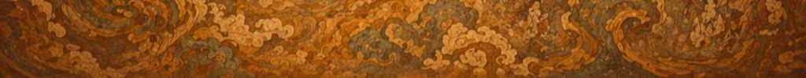

学者风采
张明教授
敦煌研究院 研究员
主要研究方向为敦煌壁画艺术，发表学术论文50余篇，出版专著3部，主持国家级科研项目2项。

李华教授
北京大学 教授
主要研究方向为敦煌文献与历史，发表学术论文80余篇，出版专著5部，培养博士研究生20余名。
王强教授
敦煌研究院 院长
主要研究方向为敦煌石窟考古与保护，发表学术论文100余篇，出版专著8部，主持国家级科研项目5项。

刘芳教授
清华大学 教授
主要研究方向为敦煌艺术与文化，发表学术论文60余篇，出版专著4部，主持国际合作项目3项。

陈亮教授
复旦大学 教授
主要研究方向为敦煌文献语言文字，发表学术论文70余篇，出版专著6部，主持省部级科研项目4项。

赵静教授
中国社会科学院 研究员
主要研究方向为敦煌历史与宗教，发表学术论文90余篇，出版专著7部，主持国家级科研项目3项。